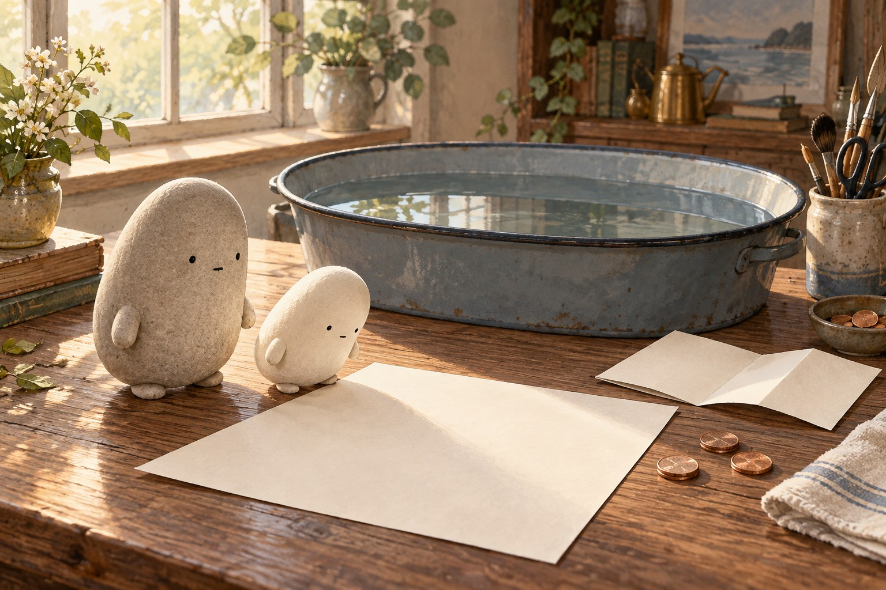
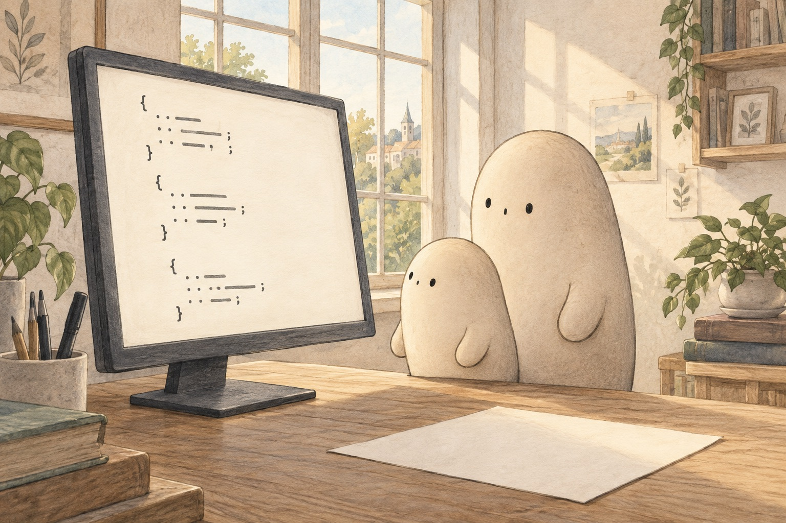
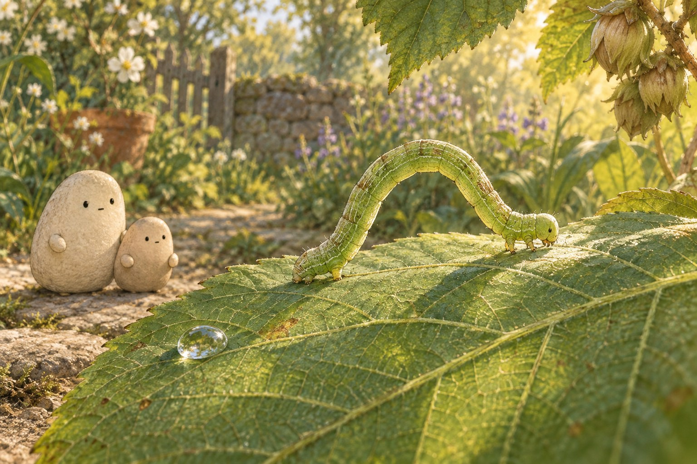
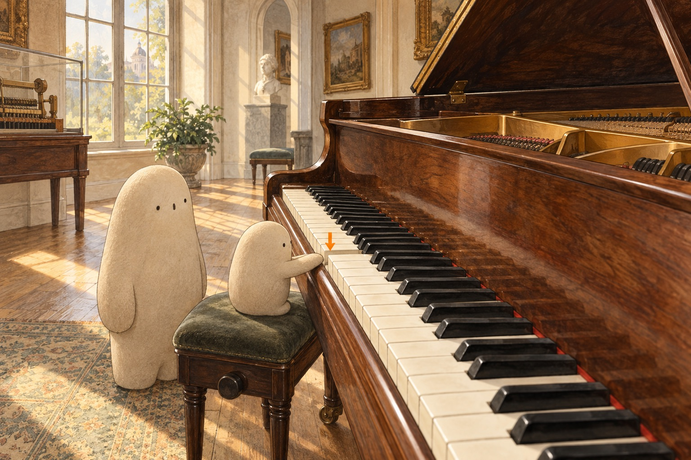
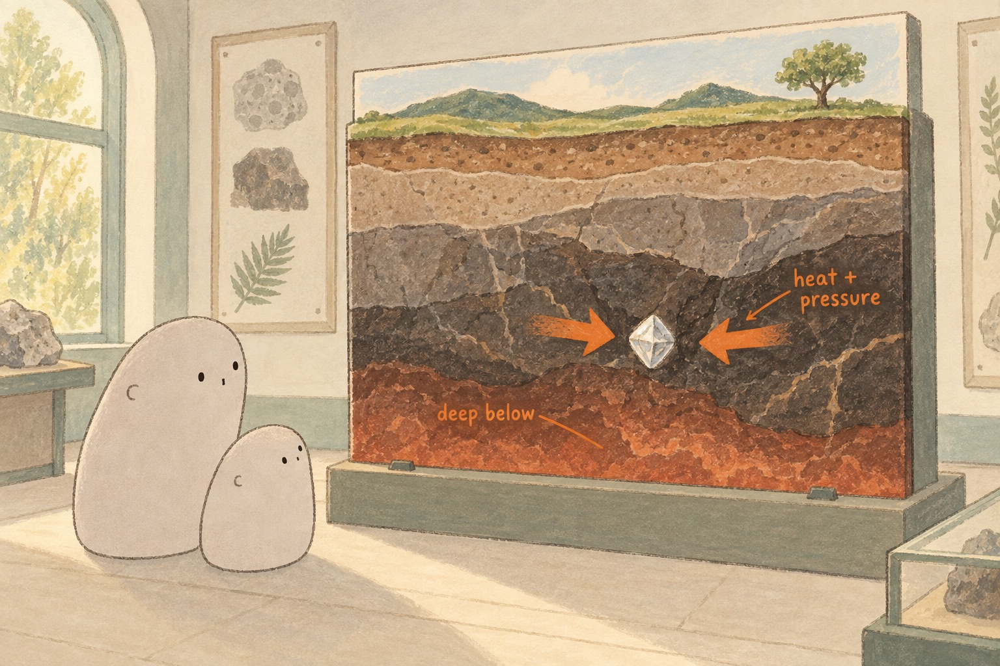
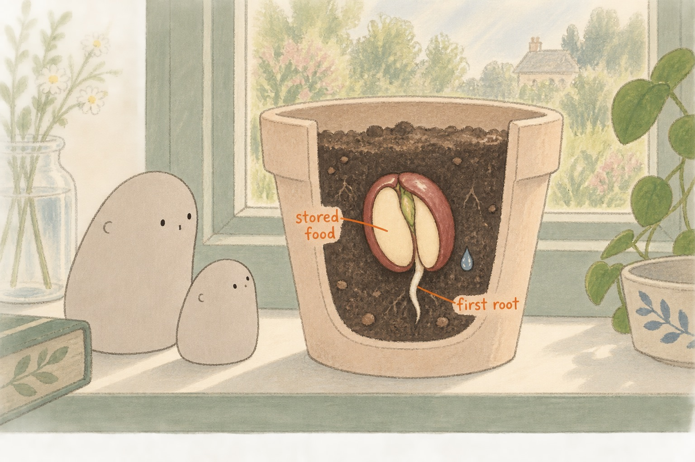

LEO · THIS MORNING
What holds a paper boat?
Today’s approved morning. Drafts stay off this shelf.

What holds a paper boat? Fold, float, and notice what holds. Wonder Daily · · Grade 3 This morningOn the shelf
Small discoveries, kept for another day. Choose a packet to revisit a morning together.
- Packed for time together The drops that did not fall A wet leaf and a dry path send Little looking for drops that never fell. Wonder Daily · · Grade 2
-
Packed for time together
 The light we cannot see
Two paper stars send Little searching beyond the rainbow.
Wonder Daily · · Grade 2
The light we cannot see
Two paper stars send Little searching beyond the rainbow.
Wonder Daily · · Grade 2
-
Packed for time together

From marks to a morning Little follows tiny ordered jobs until a blank page becomes a lesson. Wonder Daily · · Grade 2 -
Packed for time together

A loop goes somewhere A leaf vein helps Little see how a loop becomes a journey. Wonder Daily · · Grade 2 -
Packed for time together

The note inside Little follows a tiny tap into a room full of sound. Wonder Daily · · Grade 2 -
Packed for time together

The flash that wouldn't stay Little follows one quick flash from deep rock to borrowed light. Wonder Daily · · Grade 2 -
Packed for time together

A bean becomes So much can happen before we see a leaf. Wonder Daily · · Grade 2